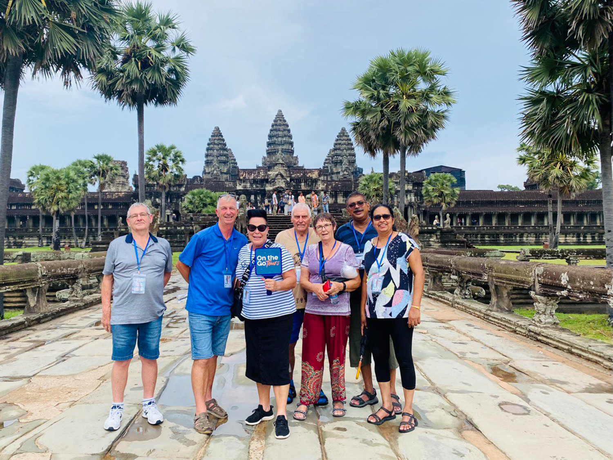
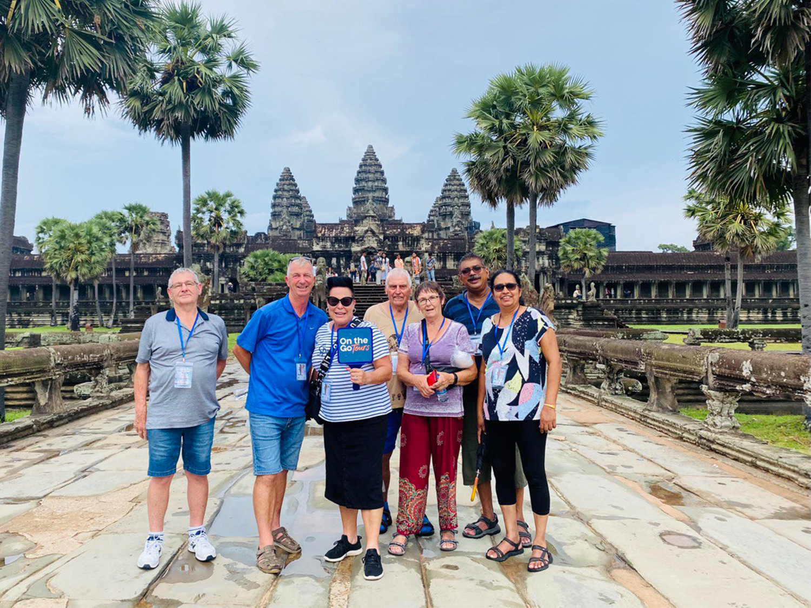

Spiti Valley Expedition
Himachal Pradesh · High Himalayas · Road Trip
A slow journey through one of India’s most dramatic landscapes. Long roads, quiet villages, monasteries looking over deep valleys and skies full of stars. Evenings end with hot thukpa, conversations and the kind of silence you only find in the mountains.
Highlights: Key Monastery · Chandratal (seasonal) · Local homestays · High passes
Get Spiti details


 
